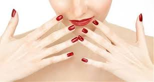

Os esmaltes foram feitos para embelezar as unhas das mulheres. Como uma forma de cuidado, cada vez mais as mulheres procuram enfeitar as unhas, com esmaltes de cores vibrantes. Todo cuidado é necessário para que as unhas fiquem bonitas e bem esmaltadas.
Se tem uma coisa que a gente deseja, é que o esmalte dure pelo menos até a próxima esmaltação não é mesmo? Acredito que quando começam a lascar é que vem realmente o desespero, hahahah, parece que estamos sem fazer as unhas. Mas no post de hoje você pode ficar despreocupada, se seguir todas as dicas que vou contar aqui pra vocês, a chance do seu lindo esmalte durar mais é muito maior.
Lixe bem: Se você despensa o uso das lixas saiba que já está começando errado. A primeira etapa para manter o seu esmalte por mais tempo é deixar a superfície das unhas sempre lisinhas, poli-las uma vez por mês já é o essencial.
Aplique a base: Procure sempre aquelas de tratamento, como as de fortalecimento ou o famoso casco de cavalo. Além de proteger as unhas da pigmentação do esmalte, ela também ajudará a mantê-lo lá por mais tempo.
Não use esmaltes vencidos: Essa é uma regra indispensável. Além de fazerem mal à saúde das unhas, esmaltes vencidos tendem a sair muito mais rápido do que os novos, e ainda não ficam com o aspecto tão bonito quanto o do vidrinho novo né?!
Vá com calma: Não adianta esmaltar as unhas correndo, ter paciência é um ponto fundamental. Dê preferência em aplicar duas camadas sempre, começando do centro e indo até as laterais. Capriche!
Ao falar sobre esmalte, muitas pessoas logo se lembram do hábito que muitos têm em pintar ou reforçar as unhas através dessa mistura química que pode ser incolor ou multicolorida. As mulheres, em sua maioria, se perdem na infinidade de cores (muitas delas com nomes incompreensíveis) que prometem um visual mais elogioso ou mais antenado. Além disso, vários violonistas empregam o material para que as unhas não quebrem durante uma apresentação.
Apesar de tantos usos na contemporaneidade, o esmalte já integrava o cotidiano da realeza do Antigo Egito. Por volta de 3500 a.C., as mulheres egípcias aplicavam uma tintura de henna preta nas unhas. As cores mais vibrantes ficavam relegadas ao uso da família real e chegavam a despertar algumas preferências entre as rainhas do Egito. Cleópatra tinha uma clara preferência pela tonalidade vermelho-escura. Já Nefertiti tinha mais gosto pelo esmalte de tom rubi.
Até essa época, uma das grandes descobertas foi a invenção do palito até hoje utilizado para a remoção das cutículas. No começo do século XX, os esmaltes começaram a recuperar espaço com o uso de soluções coloridas que não permaneciam fixadas mais do que algumas horas. Somente em 1925, durante estudos que desenvolviam tinturas para carros, foram descobertas as primeiras soluções que se assemelham com os esmaltes de hoje.
Na sua primeira versão, o produto era de um tom rosa-claro e era aplicado no meio das unhas. Chegando à década de 1930, já podemos notar que a “pintura” nos dedos do pé e da mão fazia muito sucesso entre as grandes estrelas do cinema hollywoodiano, como Rita Hayworth e Jean Harlow. No ano de 1932, os irmãos Charles e Joseph Revlon custearam a invenção de um novo tipo de esmalte, mais brilhante e com um leque variado de tonalidades.
Nas décadas seguintes, vemos que a tecnologia empregada foi se tornando cada vez mais complexa. As unhas postiças parecem como uma boa alternativa de se chamar a atenção sem gastar horas na manicure. Há poucos anos foram disponibilizadas máquinas capazes de imprimir uma imagem digital nas unhas. Difícil é saber onde a indústria da beleza pode chegar a fim de atiçar a vaidade feminina.
1 – Deixe-as respirar A gente sabe que dá preguiça retirar o esmalte um dia antes de ir à manicure, mas vale dizer que esse simples hábito permite que as unhas respirem e recuperem a hidratação: “o esmalte as impermeabiliza e bloqueia a absorção de qualquer substância, o que pode torná-las quebradiças e ressecadas”, explica a dermatologista Eliane Bussoloti. “Uma boa dica é deixar as unhas 24 horas sem esmalte e aplicar qualquer produto que ofereça hidratação, como cremes e óleos de amêndoa”, completa a profissional.
2 – Hidratação é a palavra-chave Além de higienizar as unhas, você também se preocupa em hidratá-las diariamente? “Como a formação das unhas é extremamente pobre em nutrientes, é preciso aplicar cremes e até óleos com muita frequência”, ensina Eliane Bussoloti. É importante dizer que a absorção de nutrientes só ocorre quando a unha está sem esmalte. “Quando as pacientes vêm ao consultório, recomendo algumas fórmulas manipuladas e também indico que passem óleo corporal sobre as unhas todas as noites. Uma solução prática e você nem gasta muito”, conta a dermatologista.
3 – Sim às cutículas “Retirar as cutículas é como cortar um pedaço dos dedos. Só aqui no Brasil existe isso”, afirma a dermatologista Eliane Bussoloti. “Ao invés de cortá-las com um alicate, apenas empurre-as e aplique creme hidratante específico para essa região”, fala a dermatologista. Ela ainda garante que é possível deixar as unhas em dia dessa forma: “basta ter paciência e manter essa rotina de cuidados”, finaliza.
4 – Longe dos produtos de limpeza As unhas estão lindas e com o passar do dia, elas escamam e lá se vai toda beleza? Tem solução! “Muitas pacientes me procuram porque suas unhas sempre escamam. Na maioria das vezes, isso é causado pelo contato direto com os produtos de limpeza. A saída é simples: usem luvas de borracha”, diz Eliane. “Se mesmo assim o problema persistir, é importante consultar um dermatologista”, conclui.Hidrate também as cutículas. Além de cutículas hidratadas, as mãos também merecem atenção especial. O contato direto com produtos de limpeza, pó, poluição e agentes químicos fazem com que a pele fique ressecada e, consequentemente, que as unhas fiquem fracas e quebradiças.
Uma boa solução é usar um creme hidratante, pois ao mesmo tempo que hidrata intensamente, cria uma película protetora contra os agentes externos nocivos à pele e às unhas. Ao realizar trabalhos domésticos ou de jardinagem, proteja as mãos com luvas e hidrate intensivamente ao final do trabalho..
Agora no verão, quem não gosta de estar com os pés bonitos e bem cuidados? Mas para que eles fiquem com uma aparência apresentável é necessário dar uma atenção especial a eles.
Os pés são a base de sustentação do nosso corpo, trabalham o dia inteiro e por isso merecem cuidados especiais e descanso, mesmo que tenham sido feitos para aguentar a pressão exercida pelo peso do corpo.
Para compensar o desgaste natural dos pés, é fundamental mudar alguns hábitos e adotar medidas simples e que podem evitar complicações futuras.
O segmento da beleza vem inovando cada vez mais, com cores marcantes e inusitadas, e o que poucas pessoas sabem é que a cor escolhida para pintar as unhas, pode revelar o estado de espírito que a pessoa se encontra.
O quirólogo e especialista em comportamento Felipe Okazaki listou o significado de cada cor que pode representar a maneira inconsciente da pessoa expressar os sentimentos e a personalidade. “A cor do esmalte escolhido tem grande influência no comportamento, podendo até mesmo harmonizar e equilibrar nosso bem-estar”, diz.
A escolha do esmalte pode estar de acordo com as circunstâncias de sua vida, a cor escolhida. As unhas mudam de formato por conta própria em média de seis meses, mas isso se a pessoa permitir a mudança. Agora, basta escolher o esmalte para o seu momento e aproveitar a vida!
Branca: Representa simplicidade, paz, tranquilidade para o momento da vida e otimismo.
Vermelha: Simula motivação, vitalidade, coragem, exitação e paixão.
Laranja: Apontam coragem, atitudes positivas, prazer e alegria.
Azul: Revela o amor, afeto, tranquilidade, amadurecimento.
Amarela: Representa alegria, confiança, orgulho e ansiedade.
Verde: Simula sensação de mistério, bem-estar, equilibrio, saúde e esperança.
Roxa: Aponta fantasia, introspecção, sentimentalismo e espiritualidade.
Rosas: Quando o amor próprio está em alta, pessoas altamente criativas e inovadoras.
Marvin: robô maníaco depressivo, ele foi feito para ter sentimentos humanos
Use um esmalte adequado (aquele que não tenha ingredientes corrosivos ou que não cause alergia na pessoa). Produtos como o tolueno e o formaldeído são compostos químicos que estão na composição do esmalte e algumas pessoas podem ser alérgicas.
Use luvas antes de qualquer atividade doméstica.
Uma dieta rica em proteína, nutrientes e oligoelementos é muito importante para mantê-las em ordem. Um mineral que jamais pode faltar é o zinco, que é essencial para saúde das unhas.
Evite tirar as cutículas. Sem elas, a entrada de fungos e bactérias torna-se mais suscetível. Use bases fortalecedoras formuladas especialmente pelo dermatologista, que tem em sua composição carbonato de cálcio, formaldeído e derivados de quinino. Mantenha suas unhas sempre hidratadas.